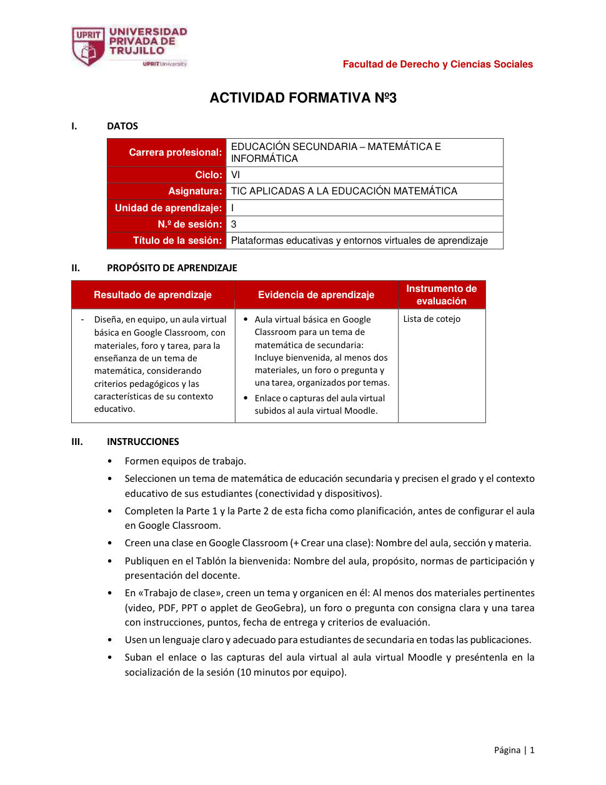
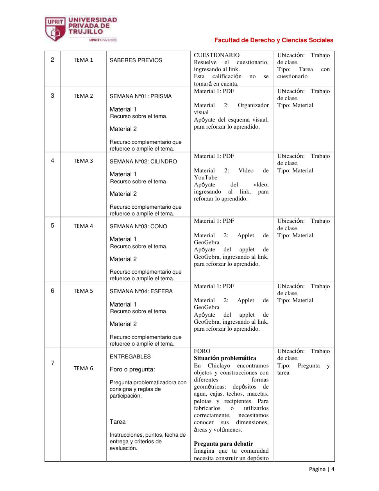

Abrir el aula virtual de Geometría
Propósito y estructura
El aula se organiza para reconocer cuerpos geométricos, calcular áreas y volúmenes y aplicar los conocimientos a situaciones de la vida cotidiana. Incluye un anuncio de bienvenida, reglas de convivencia, saberes previos, recursos por semana, un foro y una tarea integradora.
| Sección | Actividad / evidencia |
|---|---|
| Bienvenida | Anuncio en el Tablón con propósito, presentación y normas. |
| Saberes previos | Cuestionario diagnóstico, sin nota para la calificación. |
| Semana 1 · Prisma | PDF y organizador visual. |
| Semana 2 · Cilindro | PDF y video de YouTube. |
| Semana 3 · Cono | PDF y applet de GeoGebra. |
| Semana 4 · Esfera | PDF y applet de GeoGebra. |
| Entregables | Foro de discusión y tarea integradora sobre un objeto del entorno. |
Foro y tarea integradora
El foro pide proponer un cuerpo geométrico para un depósito o recipiente, justificar si calcular área o volumen y comentar la respuesta de un compañero. La intervención prevista es de 80 a 120 palabras.
La tarea consiste en identificar un objeto cercano, dibujarlo o fotografiarlo, medir sus dimensiones, aplicar fórmulas y explicar su utilidad. Producto solicitado: PDF de 2 a 4 páginas. Fecha consignada en el archivo: 30/10/2026 a las 11:59 p. m.; instrumento de evaluación con cinco criterios de cuatro puntos.
Contexto y accesibilidad considerados
La planificación sitúa la propuesta en una institución pública de Chiclayo con conectividad y dispositivos. Previene el uso de dibujos cuando no haya fotografías y la preparación de tareas sin conexión si fuera necesario.

